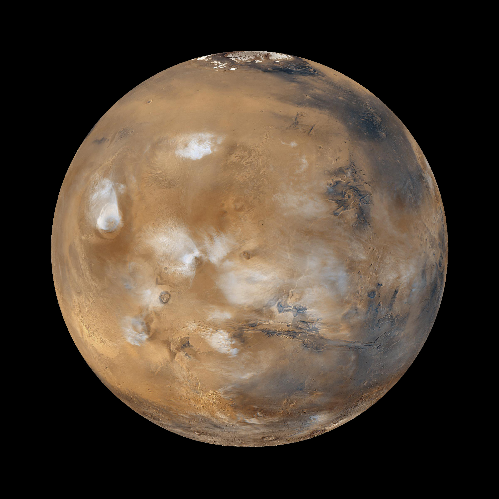

Generelle informationer om Mars

Mars er den 4. Planet i vores solsystem og kaldes også for den røde planet. Farven skyldes mineralet hæmatit, som igennem nogle oxidationsprocesser skiftede farven fra sort til rødt. Selvom menneskerne ikke endnu har været på Mars, ved vi alligevel en masse om den. For neden er der samlet nogle data som kan sammenlignes med jordens:
| Fysiske egenskaber | Jorden | Mars |
|---|---|---|
| Diameter | 12.745km | 6792km |
| Masse | 5,97x10^24kg | 6,4x1023kg |
| Tyngdeacceleration | 9,8 m/s^2 | 3,69 m/s^2 |
| Gennemsnitlig temperatur | +14°C | -63°C |
| Atmosfære-sammensætning | 77% N2, 21% O2 og 1%Ar | 95,32% CO2, 2,7% N2 og 1,7% Ar |
| Rotationstid | 23t 56min og 4sek | 24t 37min og 23sek |
| Omløbstid omkring solen | 365,26 døgn | 686,96 døgn |
| Gennemsnitlig afstand til solen | 149,6 mio. km | 228 mio. km |
Sammenlignes f.eks. jordens tyngdeacceleration med Mars’, så udgør Mars kun ca. 37% af jordens. Dvs. at hvis du f.eks. vejer 100kg på jorden, så vejer du på Mars kun 37kg. En anden vigtig fysisk egenskab er temperaturen på Mars. Den er med -63°C betydeligt mindre end på jorden, som skyldes dens afstand til solen. Med 228 mio. km afstand til solen ligger Mars lige på kanten af den såkaldte ”beboelige ”-zone, som kort fortalt går ud på at vand kan være flydende. Men også dens atmosfære og drivhuseffekten spiller en betydelig rolle. Lige som i et drivhus, hjælper atmosfæren med at holde en planet varm. Desværre har Mars kun en tynd atmosfære, da dens masse ikke kan fastholde atmosfæren. Forholdene på Mars spiller en vigtig rolle for menneskeheden, da SpaceX og andre rumfartsorganisationer har planlagt at kolonisere den. Andre bemærkelsesværdige informationer om Mars er dens to måner, Phobos og Deimos:

Desværre er Phobos med 9235,6km for tæt på Mars, og dermed dødsdømt. I omkring 50 millioner år vil den enten styrte ned på Mars, eller gå i småstykker. En spændende fact er endnu den største vulkan på Mars. Med omkring 22km er Olympus Mons den største vulkan i vores solsystem og dermed ca. 2,5 gange så stort som Mount Everst på jorden.
Albedo effekten
Albedo fortæller os noget om et legemets effektivitet til at reflektere lys. Hvis du f.eks. lyser med en lommelygte på et objekt, kan du observere objektet, da det reflekterer lyset ind i dine øjne. Sne f.eks. har en stor albedo, da en stor del af lyset kastes tilbage. Albedo-faktoren antager værdier mellem 0 (intet lys reflekteres) og 1 (alt reflekteres). For planeter afhænger faktoren til største del af deres overflade. For neden kan du se albedo-faktorer for forskellige overflader:
| Overflade | Albedo |
|---|---|
| Havoverflade | 0,035 |
| Lava | 0,04 |
| Månen | 0,12 |
| Mars | 0,15 |
| Jorden | 0,37 |
| Sne | 0,80-0,85 |